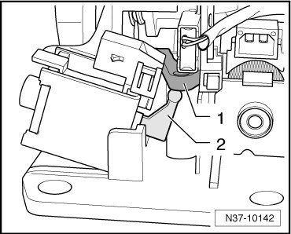
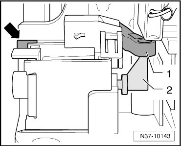

Selector Lever Park Position Solenoid
Selector Lever Park Position Solenoid
Removing
- Remove the shift mechanism. Refer to --> [ Selector Mechanism ] Selector Mechanism.
- Release connector and disconnect.
- Release the solenoid from its mounting and pull it upward and out from the locking lever - 1 - and shift mechanism.

Installing
- Set the solenoid lever - 2 - upward vertically.
- Set the solenoid into the mount of the shift mechanism at a slight angle.
- Attach the lever - 2 - to the locking lever - 1 -.
- Push the solenoid into the shift mechanism until the limit stop, and it is locked into its mounting - arrow -.

- Make sure that the solenoid is locked in its mount - arrow - up to the limit stop and the lever - 2 - engages the locking lever - 1 -.
- Install the shift mechanism. Refer to --> [ Selector Mechanism ] Selector Mechanism.